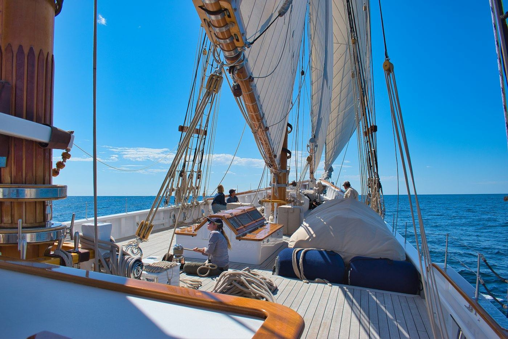
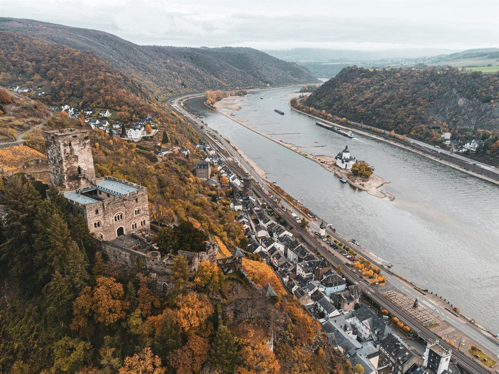
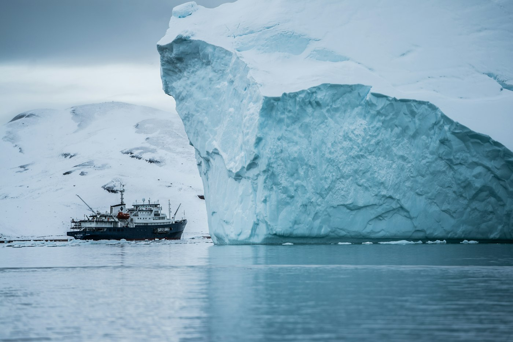
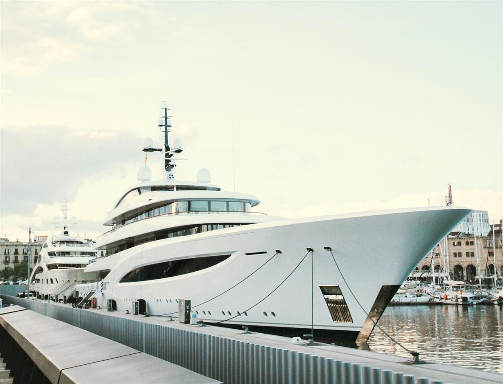
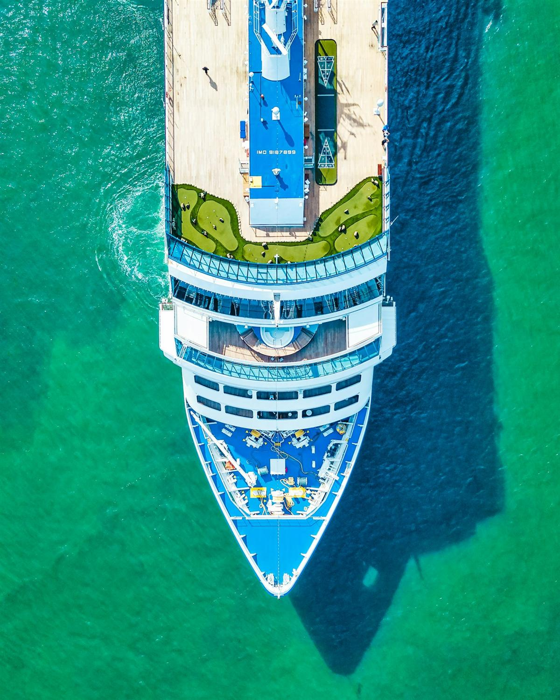
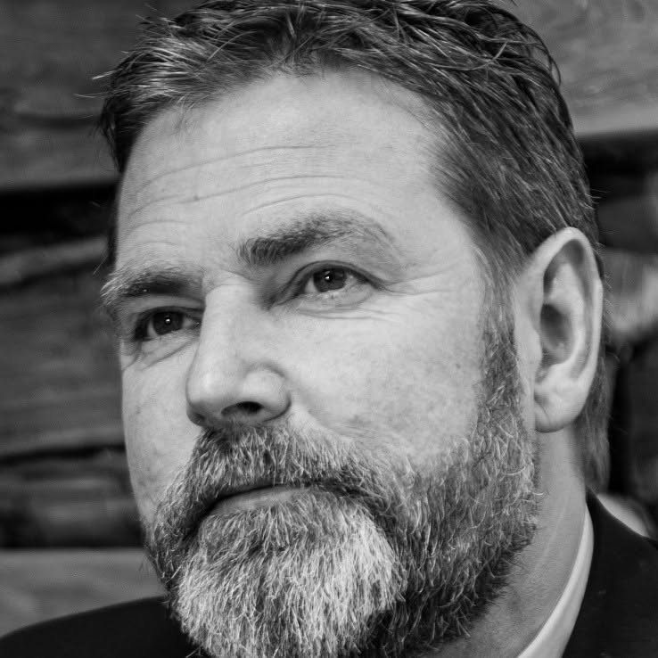

Zuid-Amerika
SH Vega
Swan Hellenic
- Vertrek
- 25 oktober 2026
- Duur
- 7 dagen
Last minute naar Brazilië met Swan Hellenic: een unieke kans om dit vaargebied te ontdekken aan boord van een expeditieschip.
Ik heb interesse
Van zeilschip tot expeditieschip: wij zoeken de rederij en de route die bij jou passen.
Ontdek de wereld op een unieke en ontspannen manier met een cruise. Terwijl je comfortabel van bestemming naar bestemming reist, geniet je van alle luxe en faciliteiten aan boord. Van culinaire verwennerij tot entertainment en ontspanning. Alles is aanwezig voor een zorgeloze reiservaring.
Overdag verken je de mooiste steden en verborgen parels, ’s avonds kom je tot rust met zicht op zee. Of je nu kiest voor een cruise in de Middellandse Zee, de Noorse fjorden of exotische bestemmingen verder weg, elke route biedt een perfecte mix van ontdekking en comfort.
Van een zeilschip met 32 gasten tot een groot cruiseschip met 6.000: de grootte van het schip bepaalt het meest. Ze beslist over de sfeer aan boord, de faciliteiten en de havens waar je kan aanmeren. Klik op een type voor uitleg en de rederijen waarmee we werken.
Illustratief, niet op schaal. Indicatief aantal gasten per schip, bij de rederijen waarmee we samenwerken.

Varen op de kracht van de wind, met het comfort van vandaag. Onder echte zeilen glijd je rustig van baai naar baai, en omdat de schepen klein zijn, ankeren ze op plekken waar grote cruiseschepen niet komen. De sfeer is ontspannen en informeel, en je leeft veel buiten aan dek. Bij Star Clippers mag je onder begeleiding zelfs de mast in.
Rederijen, klik voor meer uitleg

Elke dag een nieuwe stad of een nieuw dorp, vaak aangemeerd op wandelafstand van het centrum. Geen open zee en dus geen deining: je glijdt rustig langs wijngaarden, kastelen en stadsgezichten. Een ideale eerste kennismaking met cruisen.
Rederijen, klik voor meer uitleg

Kleine, stevige schepen die komen waar grote cruiseschepen niet kunnen of mogen: tussen het pakijs van Antarctica of langs de eilanden van de Galapagos. Met rubberboten (zodiacs) ga je dagelijks aan wal, begeleid door natuurgidsen en wetenschappers van aan boord.
Rederijen, klik voor meer uitleg

De sfeer van een privéjacht, met de service van een luxehotel. Aan boord zijn er enkel suites, elk met een eigen terras. Door hun formaat leggen deze jachten aan in kleinere havens en baaien, en vanaf het achterdek stap je zo het water in.
Rederijen, klik voor meer uitleg

Een drijvend vijfsterrenhotel: ruime suites, meerdere restaurants, een spa en een uitgebreid programma aan boord. Groot genoeg voor veel keuze, en toch persoonlijk van sfeer. Deze schepen varen over alle wereldzeeën.
Rederijen, klik voor meer uitleg

Een drijvend vakantieresort: zwembaden en glijbanen, theatershows, tientallen restaurants en bars, en eigen clubs voor kinderen en tieners. Er is altijd iets te doen, en door het grote aanbod vind je net zo goed een rustig plekje. Per nacht vaak de voordeligste manier om te cruisen.
Rederijen, klik voor meer uitleg
Een kleine greep uit het huidige aanbod via onze cruisepartner CruisePlus. Deze selectie werken we regelmatig bij.
Zuid-Amerika
Swan Hellenic
Last minute naar Brazilië met Swan Hellenic: een unieke kans om dit vaargebied te ontdekken aan boord van een expeditieschip.
Ik heb interesseGalapagos
Silversea Cruises
Een unieke, begeleide Galapagos-cruise met Silversea: oog in oog met een van de meest bijzondere ecosystemen ter wereld.
Ik heb interesseMiddellandse Zee
Explora Journeys
Een schitterende promotie voor de paasvakantie, aan boord van één van de nieuwste ultra-luxe schepen op de Middellandse Zee.
Ik heb interesseAlle vertrekdata en prijzen van onze rederijen, via onze cruisepartner CruisePlus.
Enkele voorbeelden van cruises die we eerder op maat samenstelden. Telkens een vertrekpunt, geen vast pakket. We stemmen alles af op jouw wensen.
Brusselinstapstad Basel
Vervoer per trein of vlucht (± 3–6u reistijd)
Start van de riviercruise op de Rijn.
Historische stadjes, wijngaarden en kastelen langs de oevers.
Aanmeren in het hart van bruisende steden.
Terugreis naar Brussel.
Fictief voorbeeld ter inspiratie. We stellen dit reisschema samen op maat van jouw wensen.
Vraag deze reis aanBrusselUshuaia
Vlucht via Buenos Aires (± 20u reistijd)
Aankomst aan ‘het einde van de wereld’, inschepen aan boord van het expeditieschip.
Overtocht naar Antarctica, met lezingen aan boord.
Dagelijkse zodiac-excursies tussen ijsbergen, pinguïns en zeeleeuwen.
Terug via de Drake Passage, ontschepen en terugreis.
Fictief voorbeeld ter inspiratie. We stellen dit reisschema samen op maat van jouw wensen.
Vraag deze reis aanBrusselMiami
Vlucht naar Miami of Fort Lauderdale, met 1 tussenstop (± 10–11u reistijd)
Start van de cruise door de Caraïben.
Ontspannen aan boord, eerste stop op een Caraïbisch eiland.
Witte stranden, snorkelen en lokale sfeer op elk eiland.
Ontschepen en terugreis naar Brussel.
Fictief voorbeeld ter inspiratie. We stellen dit reisschema samen op maat van jouw wensen.
Vraag deze reis aan